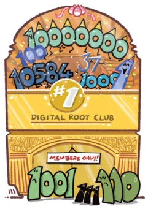

- 1.Find, without dividing, whether the following numbers are
divisible by 9.
- (i)123 (ii) 405 (iii) 8888 (iv) 93547 (v) 358095
Ans. Only the number in (ii) is divisible by 9.
- 2.Find the smallest multiple of 9 with no odd digits.
Ans. Even digits are 2, 4, 6, 8.
Since sum is 9 which is odd and cannot be formed by adding even numbers. We have smallest possible sum of digits is 18. Try forming numbers with digits 2, 4, 6, 8 to get the sum 18. The combination of even digits that sum is 18 is (2, 8, 8). Arranging these digits 288 is the smallest number that is divisible by 9, with no odd digits.
- 3.Find the multiple of 9 that is closest to the number 6000.
Ans. 6003.
- 4.How many multiples of 9 are there between the numbers 4300 and
4400?
Ans. 11
Page No. 128
If this difference is 11 or a multiple of 11, what does that say about the remainder obtained when the number is divisible by 11? Ans. Zero
Using this shortcut, find out whether the following numbers are divisible by 11. Further, find the remainder if the number is not divisible by 11.
- (i)158 (ii) 841 (iii) 481 (iv) 5529 (v) 90904 (vi) 857076
Ans. (i) 4 (ii) 5 (iii) 8 (iv) 7 (v) Divisible by 11 (vi) Divisible by 11
Page No. 129
Fill in the following table. Find a quick way to do this?
\(2 3 4 5 \frac{Divisible by}{6} 8 9 10 11\)
Number
128 Yes No Yes No No Yes No No No 990 Yes Yes No Yes Yes No Yes Yes Yes 1586 Yes No No No No No No No No 275 No No No Yes No No No No Yes 6686 Yes No No No No No No No No 639210 Yes Yes No Yes Yes No No Yes Yes 429714 Yes Yes No No Yes No Yes No No 2856 Yes Yes Yes No Yes Yes No No No 3060 Yes Yes Yes Yes Yes No Yes Yes No 406839 No Yes No No No No No No No
Page No. 130
What property do you think this digital root will have? Recall that we did this while finding the divisibility shortcut for 9.
Ans. If a number is divided by 9 then the digital root of the dividend is the remainder. If the number is exactly divisible by 9 then its digital root will be 9.
Between the numbers 600 and 700, which numbers have the digital root:
- (i)5, (ii) 7, (iii) 3?
Ans.
- (i)Digital root 5, from 600 to 700 are (Sum of digits are \(5(1 + 4\)
or \(2 + 3)) 608\), 617, 626, 635, 644, 653, 662, 671, 680, 689, 698.
- (ii)Digital root 7, Sum of digits are 7, \(16 (0 + 7\), \(1 + 6) 601\), 610, 619,
628, 637, 646, 655, 664, 673, 682, 691
- (iii)Digital root 3, sum of digits (3 means 12, 21) 606, 615, 624, 633,
642, 651, 660, 669, 678, 687, 696
Now, find the digital roots of some consecutive multiples of (i) 3, (ii) 4, and (iii) 6.
Ans.
- (i)Digital roots \(\to 3\), 6, 9; 3, 6, 9; ......
- (ii)Digital roots \(\to 4\), 8, 3, 7, 2, 6, 1, 5, 9; 4, 8, 3; ......
- (iii)Digital roots \(\to 6\), 3, 9; 6, 3, 9; ......

I’m made of digits, each tiniest and odd, No shared ground with root #1 - how odd! My digits count, their sum, my root - All point to one bold number’s pursuit - The largest odd single-digit I proudly claim. What’s my number? What’s my name?
Ans. 11,11,11,111
Eleven crore eleven lakh eleven thousand one hudred eleven.
Page No. 131